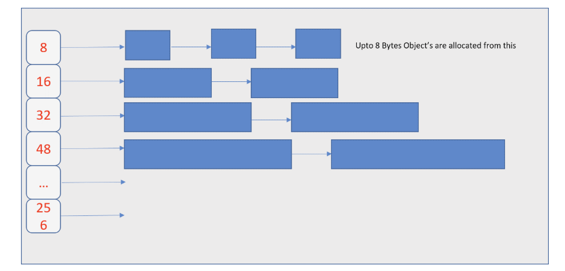

Golang基础笔记
[TOC]
开发环境
环境安装
Linux安装：
# 下载指定版本
wget https://golang.google.cn/dl/go1.21.1.linux-amd64.tar.gz
# 解压到指定目录
tar -C /usr/local/ -zxvf go1.21.1.linux-amd64.tar.gz
# 配置环境变量 ~/.bashrc or ~/.profile 添加
export GOROOT=/usr/local/go/bin
export GOPATH=$HOME/go
export PATH=$PATH:$GOROOT
# 重新加载配置
source .profile
# 验证
go version
如果是 Windows 下载安装然后同理配置相关的环境变量即可。
需要注意的是，可以在 GOPATH 目录下新建三个目录 bin 、src、pkg。
$ tree -L 1
.
├── bin
├── pkg
└── src
在老的版本中，Go项目代码需要存放在 src下，不过目前基本上都使用 go mod 进行管理了，就没有这个限制了。
关于编译
主要是几个基础命令，详细的构建编译参数可以查看官网。
# 构建
go build [-o outFileName]
# 运行 不输出可执行文件
go run main.go
# 安装 会编译并将代码拷贝到 GOPATH/bin
go install
因为Go支持跨平台，大部分代码可以交叉编译：
SET CGO_ENABLED=0 //禁用CGO
SET GOOS=Linux //目标平台是linux
SET GOARCH=amd //目标处理架构是amd64
同时可以在代码源文件顶部添加添加相关注释来声明相应文件在什么环境下会被构建，也就是所谓的编译约束（或者说条件编译）。
// +build <tag>
// 逗号分开多个Tag表示 AND
// 空格分开多个Tag 表示 OR
// !表示Not
标签支持的内容有大概下面这些：
- 操作系统，可以参考环境变量
GOOS，比如：linux、windows、darwin。 - 系统架构，可以参考环境变量
GOARCH，比如arch64、x86。 - 使用的编译器：
gc或者gccgo。 - 是否开启
CGO，cgo。 Go版本号，go1.18等。- 忽略编译文件：
ignore。 - 其他自定义标签。
需要注意：// +build 下一行必须是空行。
示例：
// +build linux, arch64, !cgo
// +build linux darwin
// +build amd64
// +build ignore
同时也可以使用文件后缀的方式来自动选择编译文件：
$filename_$GOOS.go
$filename_$GOARCH.go
$filename_$GOOS_$GOARCH.go
通过 ldflags 在编译过程中为变量赋值：
go build -ldflags "-w -s -X main.Version=${VERSION} -X github.com/demo/version.BuildNo=${BUILD_NO}"
参数说明：
-w：删除DWARF信息，编译出来的程序无法使用gdb进行调试。-s：删除符号表，panic的stack trace没有文件名、行号信息，等价于C/C++程序被strip。-X：替换包中的变量的值
可以通过
-w -s有效减少编译出来的本地程序大小，但是不利于调试和日志追踪。
变量基础
变量
Go 必须先声明变量再使用。声明方式为：
var 变量名 变量类型
// 或者是直接通过类型推导
var 变量名 = 值
// 或者短变量声明 但是该声明只能用于函数内部
变量名 := 值
一些简单示例：
var name string
var isClosed bool
var age int
// 批量声明
var (
sex int
height float64
)
// 匿名变量 _
// 不占用命名空间，不分配内存，不存在重复声明。多用于占位，表示忽略值。
// 可以使用匿名变量检查接口是否被实现
var _ FileWriter = (*io.Writer)(nil)
常量
常量在程序运行中恒定不变。使用关键字 const 声明。Go中没有类似 C/C++ 的 静态变量 static。
const (
HttpStatusOK = 200
HttpNotFound = 404
)
同时提供了常量计数器 iota，其常用于枚举的声明。iota **只能在常量表达式中使用，且在 const 关键字出现时被重置为0 **。
// 批量声明常量时某一行未赋值，默认等于上面一行的值
// 但是可以通过 iota 进行迭代
const (
Trace = iota // 0
Debug // 1
Info // 2
Warn // 3
Error // 4
Panic // 5
Fatal // 6
)
数据类型
基础数据类型不多说，看表：
| 类型 | 描述 |
|---|---|
int8 |
|
int16 |
|
int32 |
|
int64 |
|
uint8 |
|
uint16 |
|
uint32 |
|
uint64 |
|
uint |
操作系统位数对应 uint 位数 |
int |
操作系统位数对应 int 位数 |
uintptr |
无符号整型，用于存放指针 |
float32 |
单精度浮点，最大为 math.MaxFloat32 |
float64 |
双精度浮点，最大为 math.MaxFloat64 |
bool |
只支持 true 或者 false |
string |
字符串为原生数据类型，不可修改。使用 "" 包裹 |
byte |
即 uint8，代表一个 ASCII 字符 |
rune |
代表一个 utf-8 字符 |
运算符
算术运算符：
| 运算符 | 描述 |
|---|---|
+ |
相加 |
- |
相减 |
* |
相乘 |
/ |
相除 |
% |
|
注意：Go中 自增(++)和自减(--)不是运算符而是语句。 |
关系运算符：
| 运算符 | 描述 |
|---|---|
== |
相等比较，只能比较同类型数据 |
!= |
不等于 |
>= |
大于等于 |
<= |
小于等于 |
逻辑运算符，返回一个 bool 类型数据： |
| 运算符 | 描述 |
|---|---|
&& |
逻辑与 |
|| |
逻辑或 |
! |
逻辑非 |
| 位运算符：对整数在内存中的二进制进行操作。 |
| 运算符 | 描述 |
|---|---|
& |
按位与，均一为一 |
| |
按位或，有一为一 |
^ |
按位异或，不同为一 |
>> |
有移 |
<< |
左移，高位丢弃，低位补0 |
| 格式化输出占位符： |
| 占位符 | 功能 |
|---|---|
%v |
按原本值输出 |
%+v |
%v基础上按字段值展开 |
%#v |
输出Go语法格式的值 |
%T |
输出Go语法格式的类型和值 |
%% |
输出% |
%b |
整型以二进制方式显示 |
%o |
整型以八进制方式显示 |
%d |
整型以十进制方式显示 |
%x |
整型以十六进制方式显示 |
%X |
整型以十六进制方式、字母大写显示 |
%U |
Unicode字符 |
%f |
浮点数 |
%p |
指针，以十六进制显示 |
流程控制
判断
经典的 if-else结构和 switch-case结构。
对于 if-else 可以在 if 后定义表达式，将判断条件后置到 ; 后。
if err := recover(); err != nil {
// TODO
}
对于 switch-case解构，稍有不同，Go 中默认执行完对于匹配的 case 后会自动break。如果想执行下一个 case 需要使用 fallthrough。
func (l *LogLevel) unmarshalText(text []byte) bool {
switch string(text) {
case "trace", "TRACE":
*l = TraceLevel
case "debug", "DEBUG":
*l = DebugLevel
case "info", "INFO":
*l = InfoLevel
case "warn", "WARN":
*l = WarnLevel
case "error", "ERROR":
*l = ErrorLevel
case "panic", "PANIC":
*l = PanicLevel
case "fatal":
fallthrough
case "FATAL":
*l = FatalLevel
default:
return false
}
return true
}
循环
Go 只有 for循环一种循环方式。不过可以使用 for-range循环。可以通过 break 跳出当前循环，通过 continue 结束本次循环。
for 循环变量; 循环条件; 变量自增 {
// 循环体
}
关于循环 Go 在 1.22 之前有一个小坑。就是 1.22 之前的 range 循环迭代器的变量都是一个变量，而不是每次创建新变量，虽然提高了效率但是可能存在一些隐患：
allItem := make([]*Item, 0)
for _, item := range items {
allItem = append(allItem, &item)
}
// 此时所有存进去的 item 都是同一个。
// 如果在旧版本想要解决 需要进行一次赋值 v:= v 重新创建变量
allItem := make([]*Item, 0)
for _, item := range items {
item := item
allItem = append(allItem, &item)
}
同时如果在 goroutine 和闭包环境下，还会产生以下问题：
values := []int{1, 2, 3, 4, 5}
for _, val := range values {
go func() {
fmt.Printf("%d ", val)
}()
}
time.Sleep(time.Second * 3)
// 此时输出会混乱，因为本质上 闭包的 val 都是同一个。
// 可能的输出:
// 5 5 5 5 5
// 所以在旧版本想要修改 需要将循环变量传参进去
values := []int{1, 2, 3, 4, 5}
for _, val := range values {
go func(val int) {
fmt.Printf("%d ", val)
}(val)
}
time.Sleep(time.Second * 3)
// 闭包的情况
var prints []func()
for _, v := range []int{1, 2, 3} {
prints = append(prints, func() { fmt.Println(v) })
}
for _, print := range prints {
print()
}
// 输出
// 3 3 3
// 本质上 v 是同一个
在 go1.21 可以开启 GOEXPERIMENT=loopvar 构建程序，这样会在循环时默认创建新的变量，在 go1.22 以后，默认使用新的循环语义，就没有这个问题了。
同时在 1.22 版本起，range 可以支持对整数类型循环了。
for i := range 10 {
fmt.Println(i)
}
复合数据类型
Array 数组
数组是同种数据类型的集合，数组长度声明时就确定，大小不可变。
var a [6] int
// 数组必须执行元素类型和 容量
// 数组场合都时类型的一部分
// 定义时初始化
var res [2]bool{false, ture}
// 自动根据初始值判断长度
var arr = [...]{1,2,3,4}
// 根据索引初始化 同时自动判断长度
var result = [...]{1:2, 4}
// 定义多维数组
var position = [3][2]int{
[2]int{1, 0},
[2]int{1, 1},
[2]int{0, 1},
}
数组是一个 值类型，支持
==和!=运算符，其内存是被初始化过的。
Slice 切片
切片是用于相同类型元素的可变长度序列，支持自动扩容。切片是引用类型。
// slice 底层结构
type slice struct {
array unsafe.Pointer // 数据首地址
len int // 长度
cap int // 容量
}
切片的常规用法有如下：
// 声明
var nums []int // nil
// 创建&初始化
// 通过 func make(t Type, size ...IntegerType) Type 函数初始
// 第二个参数为元素数量
// 第三个参数为底层数组的容量
nums = make([]int, 0, 10)
// 获取容量
capitity := cap(nums)
// 获取长度
length := len(nums)
// 扩容&追加元素到末尾
// 因为其扩容会导致地址变化，需要对切片重新赋值
// func append(slice []T, elements...T) []T
nums = append(nums, 1)
// 切片操作 左闭右开
s1 := nums[:3]
需要注意：切片是一个引用类型，其指向了一个底层数组，对于底层数组的修改会改变切片的值。

要检查切片是否为空，请始终使用
len(s) == 0来判断，而不应该使用s == nil来判断。
Go1.18 之前扩容以 1024 为临界点，旧容量小于1024时翻倍，大于时循环增加 25% 直到大于期望容量。
Go1,18后对于 slice底层的扩容操作可以参考源码 $GOROOT/src/runtime/slice.go：
func nextslicecap(newLen, oldCap int) int {
newcap := oldCap
doublecap := newcap + newcap
if newLen > doublecap {
return newLen
}
const threshold = 256
if oldCap < threshold {
return doublecap
}
for {
// Transition from growing 2x for small slices
// to growing 1.25x for large slices. This formula // gives a smooth-ish transition between the two.
newcap += (newcap + 3*threshold) >> 2
// We need to check `newcap >= newLen` and whether `newcap` overflowed.
// newLen is guaranteed to be larger than zero, hence // when newcap overflows then `uint(newcap) > uint(newLen)`. // This allows to check for both with the same comparison. if uint(newcap) >= uint(newLen) {
break
}
}
// Set newcap to the requested cap when
// the newcap calculation overflowed. if newcap <= 0 {
return newLen
}
return newcap
}
新版本不再设立临界值，而是设置了一个值为256的threshold。超过256时不再是循环增长 1/4，而是每次增加 (旧容量+3*256)/4。也就是说，其优化了扩容策略，让底层数组大小的增长变得更加平滑，不会再出现系数从 2到 1.25 的突变。
oldCap |
扩容系数 |
|---|---|
| 256 | 2.0 |
| 512 | 1.63 |
| 1024 | 1.44 |
| 2048 | 1.35 |
| 4096 | 1.30 |
求极限扩容系数最后会趋于 1.25。
这么设计的有点是：提高小切片的增长速度，减少内存分配次数，让大切片增长率减小，节省内存。释放的内存更容易被利用。
go可以通过 copy 函数来实现对切片的拷贝。但是需要注意，目标切片必须是要已经初始化内存空间的。
var a1 []int = []int{1, 2, 3, 4, 5}
a2 := a1 //赋值
var a3 []int //这样的切片定义是没有初始化内存空间的
copy(a3, a1)
var a4 = make([]int, len(a1), cap(a1))
copy(a4, a1)
fmt.Println(a1, a2, a3, a4) //[1 2 3 4 5] [1 2 3 4 5] [] [1 2 3 4 5]
如果想要实现删除之类的操作，再go1.21版本之前，可以通过下面的方式进行删除：
var a1 []int = []int{1, 2, 3, 4, 5}
a3 := append(a1[:1], a1[2:]...) //删除切片中索引为1的元素
fmt.Println(a1, a3) //[1 3 4 5],但是底层数组的内容是[1 3 4 5 5]
但是如果是go1.21 以后，其新增了一个泛型包 slices。其提供了一组相关接口，如 比较、元素查找、修改、克隆等。但是其中的删除操作性能较差，如果需要广泛进行删除，可以考虑使用其他的数据结构。
Map 字典
Go 中的 map 的 key 值必须是 唯一且无序的。并且其不能是引用类型或者具有引用语义的数据。
// 声明
// var m map[keyType]valueType
var set map[int]struct{} // 此时并未分配内存
// 可以通过 make 进行初始化和初始容量的分配
set = make(map[int]struct{}, 10)
set[1] = struct{}{}
// 获取 map 值时可以获取两个数据
// 第二个值表示是否获取到 其是可选的
val, ok := set[1];
// 如果需要删除一个键值对 可以使用 delete()
// 第二个参数为一个 key 值
delete(set, 10)
同样的，在 go1.21 也引入了 maps 泛型包提供了一组对 map 的操作集合，比如 克隆、拷贝、比较、删除等等。
同时在 go1.24 之前的版本中，go 对于 map 的底层实现是基于 hash table，同时使用拉链法来处理哈希冲突。
// runtime/map.go
// A header for a Go map.
type hmap struct {
count int // 当前哈希表中的元素数量
flags uint8
B uint8 // 当前哈希表持有的 buckets 数量, 因为哈希表中桶的数量都按2倍扩容,改字段存储对数，也就是 len(buckets) == 2^B noverflow uint16 // 溢出桶的大致数量
hash0 uint32 // hash seed
buckets unsafe.Pointer // 存储 2^B 个桶的数组
oldbuckets unsafe.Pointer // 扩容时用于保存之前 buckets 的字段 , 大小事buckets的一般
nevacuate uintptr // progress counter for evacuation (buckets less than this have been evacuated)
extra *mapextra // optional fields
}
// mapextra 主要维护，当hmap中的buckets中有一些桶发生溢出，但有达不到扩容阈值时，存储溢出的桶
type mapextra struct {
overflow *[]*bmap
oldoverflow *[]*bmap
// nextOverflow holds a pointer to a free overflow bucket. nextOverflow *bmap
}
其在map元素达到阈值时会进行扩容操作，主要时两个条件：
- 装载因子（元素数量/桶数量）超过阈值
- 使用了太多的溢出桶
并且其扩容流程大概为：
- 新桶数组：分配通常为原先2倍的更大的桶数组，便于分散键值对，减少哈希冲突
- 重新哈希：遍历旧的桶数组的所有键值对，重新计算哈希并插入到新桶数组
- 逐步迁移：避免扩容时性能和效率问题，迁移可能时逐步的，扩容期间新、旧桶数组会同时存在，新插入的键值对直接插入新桶数组，对旧桶数组的数据的迁移会在访问时触发
- 更新状态：所有数组完成迁移会更新内部状态以反映新的结构
但是在 go1.24版本后，map的底层实现有优化，从 hash table 变成了 Swiss table。
对于 SwissTable的一些更详细的数据结构的解释可以参考链接：SwissTable
SwissTable 基于改进的线性探测法的哈希表实现，通过改进哈希表结构和元数据存储，优化了性能和内存使用。
参考源码：SwissGo 或者是 go1.24后版本 runtime\maps\map.go。
如果想使用原来的
map可以使用GOEXPERIMENT=noswissmap
部分源码如下：
// swiss map
type Map struct {
// 填充槽的数量（即所有表中元素的数量） 不包括已删除的槽位
// 必须是第一个（由编译器知道，对于len()内置）
used uint64
// 哈希种子
seed uintptr
// 指向一个table指针数组 dirPtr *[dirLen]*table
// 长度 dirLen 是 1 左移 globalDepth
// 对 小map的优化: 如果map始终包含 abi.SwissMapGroupSlots 或者更少条目
// dirPtr 直接指向一个组 dirPtr *group
// 这种情况下 dirLen = 0
//used 计算组中已使用的槽位数量(小map永远没有已删除槽位,因为没有需要维护的探测序列)
dirPtr unsafe.Pointer
dirLen int
// 在表目录查找中使用的位数
globalDepth uint8
//在目录查找时要从哈希中移出的位数
//在64位系统上，这是64- globalDepth
globalShift uint8
// writing是在写入映射时被切换（异或1）的标志
// 通常在写入时将其设置为1，但如果有多个并发写入器，那么切换会增加双方都检测到竞争的概率
writing uint8
// clearSeq是调用Clear的序列计数器。它用于在迭代期间检测映射清除
clearSeq uint64
}
他的扩容采用了扩展哈希(Extendible Hashing)，通过多级目录和表拆分，将扩容开销分摊到多次操作中。
即当 单个表容量达到 maxTableCapacity(默认1024)时触发动态扩容。
- 拆分时会创建两个子表(
table left和table right)，其深度localDepth比原表大1，表示其哈希掩码多使用了一个高位比特
//https://github.com/golang/go/blob/3f4164f508b8148eb526fc096884dba2609f5835/src/internal/runtime/maps/table.go#L1043
func (t *table) split(typ *abi.SwissMapType, m *Map) {
localDepth := t.localDepth
localDepth++ // 子表的 localDepth 比原表大 1
left := newTable(typ, maxTableCapacity, -1, localDepth)
right := newTable(typ, maxTableCapacity, -1, localDepth)
// ...
}
- 根据哈希的高位比特将原表的数据分配到左表和右表。会计算一个掩码，掩码的生成依赖于
localDepth
//https://github.com/golang/go/blob/3f4164f508b8148eb526fc096884dba2609f5835/src/internal/runtime/maps/table.go#L1052
mask := localDepthMask(localDepth) // 生成掩码，例如 0x80000000（第 32 位）
for ... {
hash := typ.Hasher(key, m.seed)
if hash & mask == 0 {
left.uncheckedPutSlot(...) // 分配到左表
} else {
right.uncheckedPutSlot(...) // 分配到右表
}
}
- 完成拆分后更新全局目录 ，使原表的索引范围指向新的子表，如果原表的
localDepth等于全局的localDepth则目录需要翻倍。
// map.go
func (m *Map) installTableSplit(old, left, right *table) {
if old.localDepth == m.globalDepth {
// 目录扩展：大小翻倍
newDir := make([]*table, m.dirLen*2)
// 复制旧目录项并指向新表
for i := range m.dirLen {
newDir[2*i] = left
newDir[2*i+1] = right
}
m.dirPtr = unsafe.Pointer(&newDir[0])
m.globalDepth++
} else {
// 不扩展目录，仅替换部分项
entries := 1 << (m.globalDepth - left.localDepth)
for i := 0; i < entries; i++ {
m.directorySet(uintptr(old.index+i), left)
m.directorySet(uintptr(old.index+i+entries), right)
}
}
}
虽然新结构大部分情况下提高了性能，但是部分情况下可能降低，比如
map[key]struct{}
Pointer 指针
Go中保留了指针概念，但是对指针的操作进行了限制。常规的指针用法只有：
&取地址*寻址(解引用)
大部分情况下的使用跟 C 是类似的。如果要分配内存可以使用 new 为指针申请内存，对于一些特殊的结构 slice、map、channel 可以使用 make 赋初值进行初始化。
但是和C/C++不同，其返回一个局部变量的地址是安全的（存在引用计数）。
var a *int // nil
var b new(int) // int 类型默认值
*b = 100
// 返回局部变量指针
func newInt() *int {
a := 3
return &a
}
需要注意，对空指针操作会引起 恐慌
Panic
Go中对指针的限制在于：
- 不支持算术运算 (
p++操作时不合法的，但是*p++可以编译通过，视为(*p)++) - 不支持随意转为另一个指针类型，即其底层类型必须一致(自定义类型底层类型相同时可以隐式转换)。
- 不能和其他任意指针类型的值进行比较，只能在指针类型相同或者时可以被隐式转换时，或者和空指针
nil进行比较时才支持比较操作。
但是这些限制并不是绝对的，可以通过 unsafe.Pointer 机制打破这些限制。unsafe.Pointer 类似于 C/C++ 的 void*，其同样使用 nil 表示零值声明。
同时 unsafe.Pointer 的滥用可能导致其值的生命周期被修改导致内存泄漏，并且由于 gc 时间的不确定性，应该慎用。
unsafe包不被保证版本兼容性
Function 函数
函数声明使用 func 关键字，函数名为一个标识符，而后时形参表和返回值列表。
如果需要调用某函数，使用函数名加上()。
Go函数支持变长参数，但是变长参数只能放到参数表的最后，在函数体内，变长参数被视为一个切片。同时，函数参数不支持设置默认值，所有参数都要求被显示传递。
示例：
package main
import (
"fmt"
)
func Sum(x int, y int) (ret int) {
ret = x + y
return ret
//使用命名返回值return后可以为空
}
// Println 可变长参数
// 可变长参数必须放在函数的最后
func Println(s string, x ...int) {
fmt.Println(s, x) //name [1 2 2 3 5]
//x是对应类型的切片
}
// 命名函数中不能声明命名函数
func main() {
ret := Sum(1, 2)
fmt.Println(ret)
Println("name", 1, 2, 2, 3, 5)
}
注意：所有的函数传参都是值传递
在函数内部不能声明命名函数，只能定义匿名函数，其定义不包括函数名称部分，其他没有太大区别。同时，匿名函数的形参会遮挡外部环境的变量。
同时，也引出闭包概念：即一个函数对象，它能够访问并操作其定义时所在作用域中的变量，即使这个函数在其定义的作用域之外被调用。
// 外部函数，返回一个闭包
func createCounter() func() int {
count := 0 // 外部函数的变量
// 内部函数，闭包
return func() int {
count++ // 修改外部函数的变量
return count
}
}
其的特点是：
- 访问外部作用域的变量
- 保持变量状态
- 本质上是一个函数对象
可以借助闭包来隐藏一些内部实现的细节，但是滥用可能会导致内存泄漏问题。
相对特殊的，Go的函数调用存在一个退出阶段：即函数调用返回后，此调用可能并未立即退出。这个阶段的意义主要在于延迟函数 defer。
package main
import "fmt"
func main() {
defer fmt.Println("The third line.")
defer fmt.Println("The second line.")
fmt.Println("The first line.")
}
//The first line.
//The second line.
//The third line.
// 可以通过延迟操作修改最内侧函数的返回值
func Triple(n int) (r int) {
defer func() {
r += n // 修改返回值
}()
return n + n // <=> r = n + n; return
}
也就是说：go的 return 操作并不是原子操作，而是：返回值赋值 -> defer 执行 -> 真正返回 的流程。
延迟函数的主要应用场景在于对一些资源的释放，比如对于网络资源的释放、锁的释放等。同时，配合内建函数 panic 和 recover 可以实现类似 try-catch 的效果。
如果函数内注册了多个 defer函数，最终结果会按照注册顺序逆序执行。
package main
import "fmt"
func A() {
fmt.Println("A")
}
func B() {
//defer用来执行释放连接
defer func() {
err := recover()
//recover会尝试恢复panic之前的操作并向后执行
fmt.Println(err)
fmt.Println("释放连接。。")
}()
panic("ERROR!!") //程序崩溃退出
fmt.Println("B")
}
func C() {
fmt.Println("C")
}
func main() {
A()
B()
C()
//A
//ERROR!! //释放连接。。
//C
}
panic：提供的一种报告致命错误的方式，panic 发生时会中断程序运行。
recover：拦截运行时 panic，重新获取流程控制权，并返回 panic value。未发生panic会返回 nil。
注意，
recover必须搭配defer使用。defer必须在可能panic之前定义，recover才能拦截到。
defer的实现上是由 runtime._defer结构体：
type _defer struct {
started bool
heap bool
openDefer bool
sp uintptr
pc uintptr
fn func()
_panic *_panic
link *_defer // 指向下一个 defer
fd unsafe.Pointer
varp uintptr
defer 和 协程是直接关联的，defer 再运行时以链表形式存在，链表头在协程 G 上，当协程执行函数时，会按照顺序将注册的 defer 在链表头部插入。
Struct 结构体
Go 可以使用 type 关键字声明类型别名或者自定义类型。
type LogLevel int
type MyInt int64
结构体是一种自定义类型，由type和 struct 关键字和 一对 {} 包含一组结构体成员构成（可以不使用 type 关键字声明无名结构体）。
同时需要注意，Go 未设置 public、private 类似的访问修饰符，所以采用了根据首字母大小写区分内部字段释放导出（首字母大写为导出，否则仅包内部可见，函数同样如此）。
struct {
want: 0,
got: 1,
args: []
}
type Logger {
io.Writer
Filename string
}
对于Go来说，结构体的尺寸为它所有字段的尺寸加上可能的填充的字节数（通常编译器会在结构体值的两个相邻字段直接填充一些字节来保证一些字段的地址总是某个整数的倍数）。
特殊的：空结构体的尺寸为零。
同时每个结构体可以被指定一个标签 tag。语法上来说，这个标签可以是任意的，默认为空字符串，实践过程中其应该被表示为一个 空格分隔的键值对形式。
type LogOptions struct {
// 输出日志等级
Level LogLevel `json:"level"`
// 日期输出格式
Layout string `json:"layout"`
// 文本格式输出前缀
TextPrefix string `json:"text_prefix"`
// 日志输出格式标志
TextFlag LTextFlag `json:"text_flag"`
// Json格式一些默认字段的key
TimeEncodeKey string `json:"time_encode_key"`
SourceEncodeKey string `json:"source_encode_key"`
LevelEncodeKey string `json:"level_encode_key"`
MessageEncodeKey string `json:"message_encode_key"`
FieldEncodeKey string `json:"field_encode_key"`
}
这些 tag 在相关的序列化和反序列化中常用，比如 json 、xml。如果想要获取这些 tag 的值可以 通过反射。
Go不存在Union联合体
Channel 通道
通道主要是配合协程实现并发同步。他的设计理念是：不要让计算通过共享内存来通讯，而是应该让他们通过通信来共享内存。
而 channel 可以视为一个 先进先出(FIFO: first in first out)队列。一些协程向此通道发送数据，由另一些协程进行处理。
随着一个数据值的传递，一些数据值的所有权从一个协程转移到了另一个协程。即协程发送一个值到channel 可以视为此协程释放了一些值的所有权，协程从通道接受到一个值，可以认为此协程获取了一些值的所有权（也可能没有任何所有权发生转移）。
通道分为单项和双向：
chan T：视为元素类型T的双向通道，编译器允许从其接收和发送数据。chan<- T：视为元素类型T的单向发送通道，编译器只允许向其发送数据。<-chan T：视为元素类型T的单向接收通道，编译器只允许从其接收数据。
package main
import (
"fmt"
)
func Scanner(in chan<- string) {
// 只允许发送数据
for i := 0; i < 20; i++ {
in <- "Hello World!"
}
close(in)
}
func Printer(out <-chan string) {
for msg := range out {
fmt.Println(msg)
}
}
func Processor(out <-chan string, in chan<- string) {
for msg := range out {
in <- msg
}
close(in)
}
func main() {
in := make(chan string)
go Scanner(in)
out := make(chan string)
go Processor(in, out)
Printer(out)
}
所有的通道均为可比较类型。其值为引用类型，通道的赋值会使得多个通道值共享底层部分。
通道有几个基本操作：
- 关闭 ，通过内建函数
close
close(ch)
- 发送，需要注意，其不能为单向接收通道，
<-为数据发送操作符
ch <- v
- 接收，需要注意，其不能为单向接收通道，
<-为数据接收操作符。如果一个通道操作不永久阻塞，其至少会返回一个值。
v := <- ch
// ok 表示第一个值释放时通道被关闭之前返回的
v, ok := <- ch
- 查询容量
cap(ch)
- 查询通道长度
len(ch)
通道操作都是并发安全的。
对不同状态的通道进行相关操作会得到不同的结果，可以参考下表：
| 操作 | 零值(nil)通道 |
非零值已关闭 | 非零值未关闭 |
|---|---|---|---|
| 关闭 | panic |
panic |
成功关闭 |
| 发送数据 | 永久阻塞 | panic |
阻塞或者发送成功 |
| 接收数据 | 永久阻塞 | 永不阻塞 | 阻塞或成功接收 |
| 通道的元素值的传递都是复制过程，从一个协程传递到另一个协程，此值被复制至少一遍。如果值传递过程中在某个通道的缓存队列中停留过，则在传递过程中被复制两次，一次在推入通道队列的时候，一次为从缓冲队列取出的时候。 |
官方编译器最大支持的通道元素类型尺寸为
65535，值传递的过程中，只有直接值被复制。
可以使用 for-range 来循环从通道中接收元素直到通道关闭并且他的缓冲队列为空。不同于 slice、map，通道只能出现一个循环变量用于存储接收到的值。
for v := range ch {
// todo
}
同时为 channel 专门设计了 select-case 分支流程控制语法（类似与 switch-case）。对于 select-case中的所有非阻塞的 case，会随机选择一个执行，如果所有的 case 都阻塞且未添加 default 分支，会阻塞当前协程。
package main
import (
"context"
"fmt" "time")
func main() {
ctx, ctxCancel := context.WithCancel(context.Background())
ticker := time.NewTicker(time.Second)
for {
select {
case <-ctx.Done():
fmt.Println("exit")
return
case <-ticker.C:
fmt.Println("tick")
ctxCancel()
}
}
}
对于 select-case流程的实现机制：
将所有
case中的 通道表达式和发送值表达式按照 从上到下、从左到右 的顺序估值。在赋值语句中作为源值的数据接收操作对应的目标值在此时不需要被估值。将所有的分支随机排序，
default总是在最后。所有case操作的通道可能是重复的。为了防止下一步操作中出现死锁，对所有的
case操作中相关的通道进行排序（这个顺序并不重要，官方编译器使用通道的地址顺序进行排序），排序前N个（N为case中涉及到的不重复通道数）通道不存在重复情况。按照上一步生产的通道锁顺序获取所有相关的通道的锁。（通道锁顺序是针对排序结果中前
N个通道来说的，通道锁逆序是指此顺序的逆序）按照随机排序后的
case分支顺序来顺序检查相应分支：- 如果是
case且 相应通道操作是向已关闭通道发送数据，则根据通道锁逆序解锁所有通道并在当前协程产生panic，结束。 - 如果是
case且 相应通道非阻塞，按照通道锁逆序解锁所有通道并执行相应的case分支代码块（此操作可能会唤醒另一个阻塞的协程），结束。 - 如果是
default，按照通道锁逆序解锁所有通道，并执行default代码，结束。
- 如果是
如果
default不存在且所有的case均阻塞，将当前协程（包含对应的case信息）推入每个case对应的通道的 发送数据协程队列 或者 接收数据协程队列。（当前协程可能多次被推入同一个通道的这两个队列中，因为多个·case操作对应的通道可能为同一个）当前协程进入阻塞状态并按照通道锁逆序解锁所有通道。
等待其他协程通过通道操作唤醒当前协程。
如果被其他协程的通道操作唤醒，目标操作可能是关闭通道或者数据的接收或者发送操作。
- 如果是数据发送或者接收操作，执行对应
case，过程中当前协程将从对应的case操作相关的通道的 发送数据协程队列 或者 接收数据协程队列 弹出。
- 如果是数据发送或者接收操作，执行对应
按照通道锁顺序获取所有相关通道的锁。
将当前协程从各个
case操作中对应的通道的 发送数据协程队列 或者 接收数据协程队列 （可能以非弹出的方式）移除。
1. 如果是被关闭操作唤醒，执行5
2. 如果是被数据发送/数据接收操作唤醒，目标case在9中已经知晓。按照通道锁逆序解锁所有通道并执行目标case。结束。
面向对象
方法Method&接收者Receiver
Go没有 Class 但是支持一些面向对象的特性。比如为类型 T 和 *T 显示地声明一个方法（方法基本上跟函数类似），其中类型 T 必须满足条件：
- 需要是一个自定义类型
T类型需要和方法声明在同一个包T不能是一个指针或者接口类型
类型T和 *T 即为各自方法的属主（接收者）类型。类型 T为 T 和 *T 声明的所有方法的属主基类型。如果为类型声明了某方法，即该类型拥有此方法。
每个方法对应着一个隐式声明的函数：
type Book struct {
pages int
}
func (b Book) Pages() int {
return b.pages
}
func (b *Book) SetPages(pages int) {
b.pages = pages
}
// 对应隐式函数
// 由此也可以看出，如果需要修改接收者变量的数据，请使用指针接收者
func Book.Pages(b Book) int {
return b.pages // 此函数体和Book类型的Pages方法体一样
}
func (*Book).SetPages(b *Book, pages int) {
b.pages = pages // 此函数体和*Book类型的SetPages方法体一样
}
这种类型函数只能由编译器隐式声明。
如果需要实现面向对象的继承效果，可以通过结构体嵌套实现模拟（同时注意嵌套结构体的字段冲突）。
type commonHandler struct {
mutex sync.Mutex
writeSyncer io.Writer
opts *LogHandlerOptions
}
type JsonHandler struct {
*commonHandler
}
type TextHandler struct {
*commonHandler
}
接口 Interface
接口是一种特殊的类型，其可以包裹非接口值实现反射、多态。同时在 go1.18开始，自定义泛型被引入， 接口类型也可以用作泛型约束。
这也导致了 go1.18之前所有的接口与均可用作值类型，go1.18以后，有些接口只能用作类型约束。可用于值类型的接口成为基本接口类型（这里主要是基本接口类型）。
接口类型是通过内嵌若干接口元素来定义类型条件的，目前支持两种接口元素：方法元素和类型元素。
type error interface {
Error() string
}
// go1.18之前 只有接口类型可以内勤在接口类型中
// 即接口多继承
type WriteSyncer interface {
io.WriteCloser
Sync() error
}
// go1.18以后 接口类型可以作为泛型约束
// PointerConstraint 指针类型泛型约束
type PointerConstraint[T any] interface {
~*T
}
type Option[T PointerConstraint[U], U any] interface {
Apply(T)
}
type optionFunc[T PointerConstraint[U], U any] func(T)
func (f optionFunc[T, U]) Apply(o T) {
f(o)
}
type options struct {
name string
}
func WithOptions(name string) Option[*options, options] {
return optionFunc[*options, options](func(o *options) {
o.name = name
})
}
需要注意：接口实现是隐式的，其关注行为而非类型。
空接口是一个特殊的接口类型，其没有内嵌任何方法或类型。同时在 Go1.18引入了空接口的类型别名 any。
因为空接口不包含任何方法，因此所有类型都实现了空接口。
type any = interface{}
一个接口值中存储的动态类型信息可以被用来检视此接口值的动态值和操纵此动态值所引用的值。 这称为反射。
针对接口，我们常用的是类型断言。语法格式为 i.(T)，其中 i 为一个接口值，T 为一个类型名或者自定义类型（可以为任意一个非接口类型或者任意一个接口类型）。
func test() {
// 编译器将把123的类型推断为内置类型int。
var x interface{} = 123
// 情形一：
n, ok := x.(int)
fmt.Println(n, ok) // 123 true
n = x.(int)
fmt.Println(n) // 123
// 情形二：
a, ok := x.(float64)
fmt.Println(a, ok) // 0 false
// 情形三：
a = x.(float64) // 将产生一个恐慌
}
如果出现针对接口值相关的比较：
- 比较一个接口值和非接口值
- 比较两个接口
对于非接口值的类型，必须实现了接口值的类型，所以可以隐式转换为两个接口的比较。而比较两个接口值，即比较两个接口值的动态类型和动态值：
- 其中一个接口时
nil，则比较另一个接口是否也为nil - 如果这两个接口值的动态类型不一样，则比较结果为
false - 如果其动态类型一样：
- 动态类型为不可比较类型，
panic - 比较动态值的比较结果
- 动态类型为不可比较类型，
即：只有两个接口都为 nil 或者两个接口的动态值、动态类型相同为可比较类型且动态值相等时为 true。
Go 中针对非空接口和接口底层上有两种实现，即 iface 和 eface。其中 eface 即 empty interface 表示不含 method 的接口（也就是空接口）。
type _type struct {
size uintptr // type size
ptrdata uintptr // size of memory prefix holding all pointers
hash uint32 // hash of type; avoids computation in hash tables
tflag tflag // extra type information flags
align uint8 // alignment of variable with this type
fieldalign uint8 // alignment of struct field with this type
kind uint8 // enumeration for C
alg *typeAlg // algorithm table
gcdata *byte // garbage collection data
str nameOff // string form
ptrToThis typeOff // type for pointer to this type, may be zero
}
type eface struct {
// 数据类型的描述
_type *_type
// 具体的类型
data unsafe.Pointer
}
// layout of Itab known to compilers
// allocated in non-garbage-collected memory
// Needs to be in sync with
// ../cmd/compile/internal/gc/reflect.go:/^func.dumptypestructs.
type itab struct {
inter *interfacetype
_type *_type
link *itab
bad int32
inhash int32 // has this itab been added to hash? fun [1]uintptr // variable sized
}
type iface struct {
// 接口元信息 可以理解为 pair<接口类型, 具体类型>
tab *itab
data unsafe.Pointer
}
泛型
go1.18中正式引入泛型。其并未完全采用类似 C++/Rust 这种为每个用到的类型都生成一份模板代码，这样虽然性能好，但是答复拖慢编译速度，同时导致编译的二进制文件体积膨胀。也不是完全采用编译时生成类型字典存储在只读数据段，在调用时根据字典查询类型信息，这样会导致巨大的运行时开销，性能较差。
Go 的泛型采用一个折中的选择，对于同种内存形状（由内存分配器决定），使用单态化，为其生成同一份代码（比如 type MyInt int 和 int ）。但是对于指针而言，所有的指针类型都是一个内存形状，此时则是采取字典方式在运行时获取类型信息。所以 Go 的泛型仍然存在运行时开销。
同时，go1.18后接口的定义也变成了类型集，含有类型集的接口又称为通用接口。
type Conn[T net.Conn | websocket.Conn] struct {
conn T
}
// 并集
type SignedInt interface {
int8 | int16 | int | int32 | int64
}
type UnSignedInt interface {
uint8 | uint16 | uint32 | uint64
}
type Integer interface {
SignedInt | UnSignedInt
}
// 交集
type Number interface {
SignedInt
Integer
}
// 底层类型 使用 ~
type Int interface {
~int8 | ~int16 | ~int | ~int32 | ~int64 | ~uint8 | ~uint16 | ~uint | ~uint32 | ~uint64
}
如果交际为空，即为空集，传递任何类型都无法通过编译
需要注意的是：
- 泛型不能作为基础类型
- 泛型类型无法使用类型断言
- 匿名结构体不支持泛型
- 不支持泛型方法
- 类型集无法作为类型实参
- 非接口类型，类型并集中不能又交集，接口类型则允许有交集
- 类型集无法直接或间接的并入自身
- 方法集无法并入类型集
// 通用的对象池
type Pool[T any] struct {
pool sync.Pool
}
func NewPool[T any](fn func() T) *Pool[T] {
return &Pool[T]{
pool: sync.Pool{
New: func() any {
return fn()
},
},
}
}
func (gs *Pool[T]) Get() T {
return gs.pool.Get().(T)
}
func (gs *Pool[T]) Put(element T) {
gs.pool.Put(element)
}
迭代器
go1.23 中对 for-range 支持了 range over func。这样就可以使用自定义迭代器了。
其本质上是一个闭包函数，接收一个回调函数作为参数，迭代过程会将序列中的元素逐个传递给回调函数 yield。
- 推送式迭代器（
pushing iterator）：由迭代器控制迭代逻辑，用户被动获取元素
// iter 标准库定义的迭代器类型
// 只接受一个参数
type Seq[V any] func(yield func(V) bool)
// 接收两个参数
type Seq2[K, V any] func(yield func(K, V) bool)
// 参考
for f := range Fibonacci(n) {
fmt.Println(f)
}
// 等同于
Fibonacci(n)(func(f int) bool {
fmt.Println(f)
return true
})
- 拉取式迭代器（
pulling iterator）：由用户来控制迭代逻辑，主动的去获取序列元素。
// iter 库定义的拉取式迭代器 采用闭包记录状态
// 可以将推送式迭代器转换为拉取式迭代器
// 都接收一个迭代器作为参数，返回两个函数 stop() 和 next() 用于控制携带继续和停止
// next 会返回被迭代的元素和一个表示当前值释放有效的布尔值 结束时返回0值
// 当不使用迭代器后 一定要调用 stop
// 迭代器不是并发安全的
func Pull[V any](seq Seq[V]) (next func() (V, bool), stop func())
func Pull2[K, V any](seq Seq2[K, V]) (next func() (K, V, bool), stop func())
// 参考
func ScanLines(reader io.Reader) iter.Seq2[string, error] {
scanner := bufio.NewScanner(reader)
return func(yield func(string, error) bool) {
for scanner.Scan() {
if !yield(scanner.Text(), scanner.Err()) {
return
}
}
}
}
工具链
包管理
Go中的包定义必须在代码开始之前，使用 package 关键字定义。（其之前可能存在相关的编译约束）
//go:build linux
// +build linux
package utils
包的定义有如下规则：
- 一个文件夹下只能由一个包，同一个包文件不能分散多个文件夹
- 包名可以不同于文件夹名，包名不能带
- main包为程序入口，编译时不含main的源代码不会得到可执行文件- 包中的标识符以首字母大写表示对外暴露，首字母小写表示私有
使用 import 关键字导入包，如果不使用 go mod 模式，包名从 $GOPATH/src/ 后开始计算。同时为了规范，一般采用如下格式：
package main
import (
// 标准库
stdsql "database/sql"
// 项目库
logger "common/logger"
// 第三方库
_ "github.com/go-sql-driver/mysql"
)
Go中禁止循环导入包
Go中可以在每个包声明 init() 函数来实现包中一些相关变量的初始化，这个函数会在包首次被导入时字段触发。init() 函数没有参数也没有返回值，只能在程序运行时自动被调用，不能再代码中主动调用。
// 导入顺序
main--> import -->A-- import -->B-- import -->C
// 执行顺序
main.init()<---A.init()<---B.init()<---C.init()
在古老时代Go还曾用过 Vendor 作为包管理，但是后面基本上被官方的 go modules给统一了。
export GO111MODULE=on
现在依然可以开启
vendor来作为项目的本地包管理：go build -mod=vendor
常规的go.mod相关定义：
// module 定义模块路径
module projectName
// go 版本
go 1.24.1
// require 包+版本号
// // indirect 表示间接依赖
require google.golang.org/protobuf v1.36.5 // indirect
// replace 提供模块路径 或者版本
require common v0.0.0
replace common => ./common
// exclude 排除特定版本
exclude (
github.com/bad/module v1.2.3
)
go.sum 文件记录了每个依赖性的哈希值和版本信息，以确保依赖性的一致性和完整性。其不是 go.mod的一部分但是和其密切相关。
⮞ go mod help
Go mod provides access to operations on modules.
Note that support for modules is built into all the go commands,
not just 'go mod'. For example, day-to-day adding, removing, upgrading,
and downgrading of dependencies should be done using 'go get'.
See 'go help modules' for an overview of module functionality.
Usage:
go mod <command> [arguments]
The commands are:
download download modules to local cache
edit edit go.mod from tools or scripts
graph print module requirement graph
init initialize new module in current directory
tidy add missing and remove unused modules
vendor make vendored copy of dependencies
verify verify dependencies have expected content
why explain why packages or modules are needed
Use "go help mod <command>" for more information about a command.
在 Go1.18 以后，子模块可以通过工作区的模式实现，其能给在本地项目的 go.work 文件中，通过设置一系列以来的模块本地路径，再将路径下的模块组成一个当前的工作区，他的读取优先级是最高的。
⮞ go work help
Usage:
go work <command> [arguments]
The commands are:
edit edit go.work from tools or scripts
init initialize workspace file
sync sync workspace build list to modules
use add modules to workspace file
vendor make vendored copy of dependencies
Use "go help work <command>" for more information about a command.
生成的 work文件可以参考：
go 1.24.1
use (
.
./common
)
replace (
golang.org/x/net => example.com/fork/net v1.4.5
)
go.work 的 replace 优先级会高于 go.mod中的 replace指令。
可以通过
-workfile=off来禁用工作区模式
由于 Go 编译的情况可能比较复杂，建议遇到复杂编译情况时可以使用 makefile 或者 编写编译脚本来完成。
异步编程
协程
Go不提供线程的创建方式，采用 goroutine 协程来实现并发异步。相对于 thread 其更轻量级，goroutine 处于用户态完全由go的协程调度器调度完成。
其可以通过 channel等机制实现 goroutine 之间的同步等操作。对于 go来说，每个函数都是一个并发单元，可以通过 go 关键字为函数创建一个 goroutine。
func (gs *TcpConnectionKeeper) startBroker(broker ConnectionBroker) {
defer broker.Close()
cid := broker.ConnectionID()
if cid == "" || cid != gs.connID {
return
}
heartbeatAckChan := make(chan ControlPacket)
defer close(heartbeatAckChan)
ctxTask, ctxTaskCancel := context.WithCancel(gs.ctx)
defer ctxTaskCancel()
wg := sync.WaitGroup{}
wg.Add(1)
go func() {
defer wg.Done()
defer ctxTaskCancel()
gs.readLoop(ctxTask, broker, heartbeatAckChan)
}()
wg.Add(1)
go func() {
defer wg.Done()
defer ctxTaskCancel()
gs.writeLoop(ctxTask, broker)
}()
heartbeat := broker.Keepalive()
if heartbeat > 0 {
wg.Add(1)
go func() {
defer wg.Done()
defer ctxTaskCancel()
gs.keepaliveLoop(ctxTask, heartbeat, heartbeatAckChan)
}()
}
wg.Wait()
}
Go 中的 goroutine 属于有栈协程，不同于 js 的 Promise，goroutine 有自己的寄存器上下文，和底层线程属于 M:N 的关系。js 的 Promise 是 无栈协程的实现方式，本质上是 事件循环。
多个 goroutine 同时操作一个资源（临界区）时，同样会发送数据竞争问题。官方提供了 sync包来处理控制访问共享资源的方法。
锁 Mutex
互斥锁时一种常用的控制共享资源访问的方法，它能保证同时只有一个 goroutine 可以访问共享资源。在 Go 中主要实现为 sync.Mutex 和 synx.RWMutex，他们都实现了 sync.Locker接口。
其中 sync.RWMutex 还有 RLock() 和 RUnlock() 方法用来支持多个读取着读取同一份数据但防止此数据被多个 goroutine 写入。
package main
import (
"fmt"
"runtime"
"sync"
)
type Counter struct {
m sync.Mutex
n uint64
}
func (c *Counter) Value() uint64 {
c.m.Lock()
defer c.m.Unlock()
return c.n
}
func (c *Counter) Increase(delta uint64) {
c.m.Lock()
c.n += delta
c.m.Unlock()
}
func main() {
var c Counter
for i := 0; i < 100; i++ {
go func() {
for k := 0; k < 100; k++ {
c.Increase(1)
}
}()
}
// 仅演示
for c.Value() < 10000 {
runtime.Gosched()
}
fmt.Println(c.Value()) // 10000
}
对于 sync.RWMutex ，其读锁维护有计数器，每次加锁成功计数器加一，解锁时减一。零计数表示其读锁处于为枷锁状态。对于一个可寻址的 sync.RWMutex：
- 写锁只在其读锁和写锁都处于未加锁状态才能成功加锁。
- 写锁处于加锁状态时，任何加锁操作都将导致当前协程阻塞直到写锁释放才有可能操作成功。
- 读锁处于加锁状态，新加写锁会导致协程阻塞。
- 读锁处于加锁状态，为避免写入者永远无法获取成功写锁，在某个被阻塞的加写锁操作之后的所有加读锁操作也会被阻塞。
- 写锁处于加锁状态，为避免读取者永远无法加读锁，发送在写锁下一次被解锁操作之前的加读锁操作都将在此写锁下一次被解锁之后成功。
注意：锁并不绑定某个协程，也不纪律哪个协程成功加锁。
等待组 WaitGroup
每个等待组 sync.WaitGroup 都在内部维护着一个技术，初始为0。
type WaitGroup struct {
noCopy noCopy
// high 32 bits are counter, low 32 bits are waiter count.
state atomic.Uint64
sema uint32
}
func (wg *WaitGroup) Add(delta int) {
// 如果添加一个负值或者调用 wg.Done() 使得计数器变为负数
// 会产生 panic
}
func (wg *WaitGroup) Done() {
// 说明 wg.Done 和 wg.Add(-1) 是等价的
wg.Add(-1)
}
func (wg *WaitGroup) Wait() {
}
当一个协程调用 wg.Wait()时：
- 如果
wg计数器为0，wg.Wait()为一个空操作。 - 如果有值，则协程阻塞等待计数器变为0。
多协程间通知 Cond
如果想确保某个操作只会被一个协程且只会执行一次可以使用 sync.Once：
var (
defaultLogger atomic.Pointer[Logger]
once sync.Once
)
func init() {
// once 只有一个方法 Do(f func())
once.Do(func() {
defaultLogger.Store(NewLogger(NewTextHandler(os.Stdout, WithTextFlag(DefaultBitFlag), WithLevelEnabler(TraceLevel))))
})
}
如果需要实现多个协程间通知，可以使用 sync.Cond。每个 sync.Cond 拥有一个字段L为 sync.Locker 类型，具体通常为 *sync.Mutex 或者 *sync.RWMute。
其提供三个接口：Wait()、Signal()、Broadcast()。
每个 Cond 维护有一个 先进先出等待协程队列，对于一个可寻址的 Cond：
Wait()必须在L字段处于加锁状态时调用，否则产生panic。调用成功时：- 先将协程推到等待协程队列
- 调用
L.Unlock()解锁 - 使当前协程阻塞，等待其他协程从高
Signal()、Broadcast()唤醒。如果成功被唤醒将试图重新加锁，加锁成功后Wait()调用退出
Signal()将唤醒并移除等待协程队列中的第一个协程（不为空）Broadcast()将唤醒并移除等待队列中的所有协程
package main
import (
"fmt"
"math/rand"
"sync"
"time"
)
func main() {
const N = 10
var values [N]string
cond := sync.NewCond(&sync.Mutex{})
for i := 0; i < N; i++ {
d := time.Second * time.Duration(rand.Intn(10)) / 10
go func(i int) {
time.Sleep(d) // 模拟一个工作负载
cond.L.Lock()
// 下面的修改必须在cond.L被锁定的时候执行
values[i] = string('a' + i)
cond.Broadcast() // 可以在cond.L被解锁后发出通知
cond.L.Unlock()
// 上面的通知也可以在cond.L未锁定的时候发出。
//cond.Broadcast() // 上面的调用也可以放在这里
}(i)
}
// 此函数必须在cond.L被锁定的时候调用。
checkCondition := func() bool {
fmt.Println(values)
for i := 0; i < N; i++ {
if values[i] == "" {
return false
}
}
return true
}
cond.L.Lock()
defer cond.L.Unlock()
for !checkCondition() {
cond.Wait() // 必须在cond.L被锁定的时候调用
}
}
如有必要，多个
sync.Cond可以共享一个sync.Locker。
原子操作 Atomic
原子操作是比其它同步技术更基础的操作。原子操作是无锁的，常常直接通过CPU指令直接实现。
Go提供的原子操作都在 sync/atomic 包下，在 Go1.18引入泛型后，从 Go1.19 开始引入了 atomic.Pointer[T any] 泛型类型和 atomic.Bool。基本的原子操作存在四类：
- 读取
Load - 写入
Store - 修改
Add - 交换
Swap - 比较并交换
CompareAndSwap
n := int32(1)
atomic.AddInt32(&n, 1)
// go1.19
n1 := atomic.Int32{}
n1.Add(1)
GMP模型
协程相较于线程，完全处于用户态的上下文切换对比线程切换需要陷入内核态更加轻量，同时协程所需要的内存占用更小。但是通常来说，协程的CPU调度是抢占式的，协程由用户态调度是协作式的。
go 中的 goroutine 创建简单（只需要通过 go 关键字），占用小，调度由 runtime完成，其协程调度器主要有 G（协程）、M（系统线程）、P（逻辑处理器） 三部分组成。
协程的调度仍让依附于线程，即协程执行所需要的时间片来自于线程，这部分仍由操作系统调度。那如何优化协程的时间片利用便是关键：
1:N：所有协程都分配到一个内核线程，这样仅仅剩协程间的切换，但是无法利用现代CPU多核性能。N:N：一个线程对应一个协程，协程独占线程时间片，也可以更好利用多核性能，但是线程本身的创建和切换成本高，未能利用好协程优势。M:N：多个线程对应多个协程，每一个线程都会对应若干个协程，由处理器P来负责调度协程G如何使用线程的时间片。
goroutine 的协程生命周期如下：
_Gcopystack是写正常扩张时具有的状态
Go 的协程时典型的有栈协程，每一个协程都会在堆上分配独立的栈空间，并且它会随着使用量的变化而增长或者缩小。
新建协程时，
runtime.stackalloc默认会为其分配2KB的栈空间大小。特殊情况下会根据栈内存分别从stackpool和本地的线程缓存中获取。如果不够则需要扩容，编译器会在函数开头插入
runtime.morestack函数来检查当前协程释放需要进行栈扩容需要则会通过
runtime.newstack来完成真正的扩容操作，并由runtime.copystack来完成栈拷贝的工作，拷贝前G的状态由_Grunning切换为_Gcopystack，完成后由_Gcopystack切换为_Grunning。详细拷贝的过程可分为：- 分配新的栈空间
- 将就栈内存通过
runtime.memmove直接复制到新的栈空间 - 调整栈指针结构，比如
defer、panic - 更新
G的栈空间字段 - 通过
runtime.adjustframe调整执行旧栈内存的指针 - 释放旧栈的内存
当
G的状态为_Grunable、_Gsyscall、_Gwating时，GC会扫描协程栈的内存空间，并由runtime.shrinkstack来完成真正的缩容操作。
runtime.morestack几乎会在所有函数的开头都被插入，所以栈扩容检查的时机也是一个协程抢占点。
远古时期的栈扩容采用分段栈试下，不进行内存拷贝而是申请一片新的栈空间再通过指针链接，形成栈链表。好处时不需要拷贝原有的栈，但是会十分频繁地触发栈扩容和缩容。后续 go1.4 改成了连续栈，连续栈分配了更大地栈空间，不会因为内存达到临界值而频繁触发扩容和缩容，并且由于内存地址是连续的，格局缓存的局部性原理，连续栈对 CPU 缓存也更加友好。
GMP 模型如下：
- 全局队列：存放等待运行的
G。 - P的本地队列：存放等待运行的
G，但是存放数量有限，不超过 256个。新建G会优先加入P的本地队列，如果队列满了，则会一定本地队列一半的G到全局队列。 - P列表：所有的
P都由运行时创建，可由GOMAXPROCS函数设置。 - M队列：线程运行任务需要获取
P，从P的本地队列中获取G，当P队列为空时，M也会尝试从全局队列获取一批G到本地队列执行，或者从其他P的本地队列偷一半到自己的本地队列。
Go的协程调度器和OS调度是通过M结合的，每个M都代表了一个内核线程，OS调度去负责把内核线程分配到CPU上执行。
协程调度器的设计策略：
复用线程：复用线程，避免频繁创建、销毁线程
work stealing机制：本线程无可运行的G时尝试从其他线程绑定的P偷取G执行，而非销毁线程hand off机制：本线程因为G进行系统调用阻塞时，会释放绑定的P转移给其他空闲的线程执行
利用并行
抢占调度：对比
coroutine要等待协程主动让出CPU，groutine最多占据CPU一个时间片10ms以防止其他goroutine饿死全局
G队列：全局队列一如存在，当本地队列为空优先从全局队列获取，全局队列也为空则执行work stealing。
启动 goroutine 的 go func()调度流程如下：
调度器的生命周期如下：
其中存在特殊的 M0和 G0：
M0：M0是启动程序后的编号为0的主线程，这个M对应的实例会在全局变量runtime.m0中，不需要在heap上分配，M0负责执行初始化操作和启动第一个G， 在之后M0就和其他的M一样了。G0：G0是每次启动一个M都会第一个创建的goroutine，G0仅用于负责调度的G，G0不指向任何可执行的函数, 每个M都会有一个自己的G0。在调度或系统调用时会使用G0的栈空间, 全局变量的G0是M0的G0。
内存模型和GC
操作系统在逻辑层面将进程数据分为五个部分：
- 代码段（
Text Segment）：通常存放程序代码，运行前已经确定，通常属于只读部分。 - 数据段（
Data Segment）：存储已初始化的全局变量和静态变量。其在程序加载时被初始化，可读写。 - 堆（
Heap）：用于动态内存分配，大小不固定。 - 栈（
Stack）：存储函数局部变量、参数等。通常在编译时已经确定大小。 - 未使用段（
BSS Segment）：用于存储程序中未初始化的全局变量和静态变量。
对于参与内存管理的的角色一般为：用户程序（Mutator）、内存分配器（Allocator）、垃圾回收（Collector）。
编程语言一般包含两种内存分配器：线性分配器（Sequential Allocator）、空闲链表分配器（Free-List Allocator）。
- 线性分配器：申请顺序从前往后分配堆内存。只需要维护一个执行内存当前分配位置的指针，用户申请内存时检查剩余空间并在返回分配内存区域后修改指针指向。
其简单但是分配的内存无法回收，并发场景下需要加锁影响性能，同时因为其是线性扩张需要屏藩整理内存。
- 空闲链表分配器：维护空闲内存块链表，分配时通过策略找到合适的内存块
使用更为广泛，其内存分配策略有：
- 首次适应：链表头开始遍历，找到第一个大于申请内存的内存块，容易造成零散小内存。
- 循环首次适应：从上次遍历结束位置开始遍历，找到第一个大于申请内存的内存块。
- 最优适应：从链表头遍历整个链表，选择最合适的内存块。
同时为了优化效率，还可以使用 隔离适应策略：将内存分割为多个链表，称之为分箱(bins)，每个分箱的内存块大小相同，申请内存时先找到满足条件的分箱，再从分箱中找到空闲内存块。
内存管理
在内存管理部分，Go 基于 TCMalloc 核心思想实现。
TCMalloc的核心思想时将内存分为多个级别来缩小锁的粒度。内存管理部分分为两个部分：线程内存 和 页堆。
- 线程内存：每一个内存页都被分为多个固定分配大小规格的空闲列表，用于减少碎片化。这也每一个线程都可以获得一个用于无锁分配小对象的缓冲，可以让并行程序分配小对象（
<=32KB）更加高效。

- 页堆（
Page Heap）：TCMalloc管理的堆由一组页组成，一组连续的页面被表示为span。当分配的对象大于32KB，将使用 页堆 进行内存分配。当没有足够的空间分配小对象则会到页堆获取内存。如果页堆页没有足够的内存，则页堆会向操作系统申请更多的内存。
Go的内存分配器最初是基于TCMalloc但是现在已经有很大不同。
Go 运行时调度器会在调度时会将 Goroutines(G) 绑定到 逻辑处理器(P，Logical Processors) 运行。Go 实现的 TCMalloc 将内存分为 68 种不同规格的块：
// sizeclasses.go
const (
_NumSizeClasses = 68
)
var class_to_size = [_NumSizeClasses]uint16{
0, 8, 16, 24, 32, 48, 64, 80, 96, 112, 128, 144,
160, 176, 192, 208, 224, 240, 256, 288, 320, 352,
384, 416, 448, 480, 512, 576, 640, 704, 768, 896,
1024, 1152, 1280, 1408, 1536, 1792, 2048, 2304, 2688,
3072, 3200, 3456, 4096, 4864, 5376, 6144, 6528, 6784,
6912, 8192, 9472, 9728, 10240, 10880, 12288, 13568,
14336, 16384, 18432, 19072, 20480, 21760, 24576, 27264, 28672, 32768,
}
Go 通过 mspan 结构体进行管理。其可以简单视为一个包含 页起始地址，页span规格，页数量的双端链表。
Go为每一个逻辑处理器（P，Logical Processors） 提供一个本地线程缓存（local thred cache）称为 mcache。所以如果 goroutine 需要内存可以直接从 mcache 获取，由于同一时间运行在只会有一个 goroutine 和 P 绑定，所以中间不需要加锁。
每个
mcache包含所有大小规格的mspan作为缓存，每个P都拥有自己的mcache，所以从mcacahe分配内存无序持有锁。
对于每一种大小规格，都有两种类型：
- scan：包含指针的对象。
- noscan：不包含指针的对象。
这样可以使得进行 GC 时回收 noscan 对象无须进一步扫描释放引用其他活跃对象。通过 mcache 在分配小对象（<=32KB）时可以直接通过 mcache分配。
当 mcache没有可用空间，会从 mcentral 的 mspans 列表获取一个新的所需大小规格的 mspan。 mcentral 对象手机所有给定规格大小的 span，每个 mcentral 都包含两个 mspan 列表：
empty mspan list：没有空闲对象或者span已经被mcache缓存的span列表。nonempty mspan list：有空闲对象的mspan列表。
所有的 mcentral 都维护在 mheap 结构体内。Go 使用 mheap 对象管理内存，只有一个全局变量，持有虚拟地址空间。
mheap 存储了 mcentral 的数组。这个数组包含了各个的 span 的 mcentral。由于我们有各个规格的
span的mcentral，当一个 mcache 从mcentral申请 mspan 时，只需要在独立的 mcentral 级别中使用锁，所以其它任何 mcache 在同一时间申请不同大小规格的 mspan 将互不受影响可以正常申请。
对于 Go 中对象分配流程：
- 大于
32KB的大对象直接从mheap分配 - 小于
16B的使用mcache的微型分配器分配 - 其余的先通过计算使用的大小规格，然后使用
mcache中对应大小规格的块分配 - 如果对应的大小规格在
mcache中没有可用的块，向mcentral申请 - 如果
mcentral也没有可用的块，则向mheap申请，并根据bestFit算法找到最适合的mspan，如果申请的mspan超出申请大小，会根据需求进行切分，以返回用户需要的页数。剩余的页会构成一个新的mspan返回mheap的空闲列表。 - 如果
mheap没有可用span则向操作系统申请一系列新的页（最小 1MB）。
逃逸分析
Go语言存在 GC，故而不需要自己维护内存。对于一个变量的，编译器会自动决定把一个变量放在栈还是放在堆，编译器会做逃逸分析(escape analysis)，当发现变量作用域没有跑出函数范围，就可以在栈上，反之则必须分配在堆。
故而这样的代码在 Go合法而 C/C++ 不合法：
package main
// go:noinline 表示禁止编译器内联
//go:noinline
func test() *int {
var res1, res2, res3, res4, res5, res6 int
res1 = 1
res2 = 2
res3 = 3
res4 = 4
res5 = 5
res6 = 6
// 如果不禁止内联 test 会被内联到 main 中
// 即使 res3 逃逸到堆上 内存依然会是连续的
println(&res1, &res2, &res3, &res4, &res5, &res6)
return &res3
}
func main() {
mainVal := test()
println(*mainVal, mainVal)
}
// output
// 0xc000063f08 0xc000063f00 0xc00000a048 0xc000063ef8 0xc000063ef0 0xc000063ee8
// 3 0xc00000a048
可以使用 go tool compile -m main.go 查看测试（或者通过 go build -gcflags）：
# 禁止内联
⮞ go tool compile -m main.go
main.go:19:6: can inline main
main.go:6:18: moved to heap: res3
# 不禁止内联
⮞ go tool compile -m main.go
main.go:3:6: can inline test
main.go:17:6: can inline main
main.go:18:17: inlining call to test
main.go:4:18: moved to heap: res3
普遍来说，变量需要使用堆空间，那么他就应该进行逃逸。但是实际上还有很多逃逸现象，比如给一个引用类对象成员进行赋值，就大概率会出现逃逸（一般来说：函数外部没有引用，优先放到栈中，函数外部存在引用，必定放到堆中）。
其他的一些内存逃逸的情况：动态类型赋值、大对象分配、闭包引用。
GC 算法
栈内存主要用于存储局部遍历和函数调用栈信息，当函数调用结束，栈帧自动出战，其中的局部变量也随之自动被销毁，栈中变量生命周期明确，栈内存自动管理，不需要 GC 介入。
堆内存时程序运行时动态分配的，堆内存上的对象生命周期通常跨函数调用或者被多个部分共享和引用。因此 GC 算法主要用于自动管理堆内存的对象生命周期。
对于 GC 中如何识别可回收对象部分有几种常用解法：
- 引用计数（Reference Counting）。即所有对象存在相应的引用计数器记录其被引用状态，最后引用计数归零时即成为可回收对象。
- 缺点：循环引用问题
- 解决方案：使用类似标记清除法处理循环引用，或者借助
Tracing GC。
- Tracing GC。 将程序内存分为
GC root和GC heap两部，从root set集合作为起点进行图遍历，找到可达对象，回收不可达对象。
基于 Tracing GC 常见 GC 算法有：
标记清除（Mark-Sweep）：标记所有需要回收的对象，在标记完成后统一回收所有被标记对象。缺点：容易产生内存碎片问题，导致大对象无法分配。
复制算法（Coping）：将可用内存按容量划分为大小相等的两块，每次只使用其中其中的一块，当这一块内存用完了就将还存活的对象复制到另一块，再把已使用的内存空间一次清理。缺点：可用内存减少，经常搬运长生命周期对象影响效率。
标记整理（Mark-Compact）：类似标记清除，但是不止直接堆可回收对象进行清理，而是让所有存活对象向一端移动，然后清理掉边界以外的内存。
分代清理（Generational Collection）：分代的基本假设：绝大部分对象生命周期都非常短暂，存活时间短。等待算法将堆内存分为新生代和老生代，针对不同年代特定使用不同的收集算法。
Go V1.3 之前使用标记清除。在执行的过程中，为了保证 GC 的正确性，会需要程序暂停，也就是STW。期间，CPU 不执行用户代码全部用于垃圾回收。所以就会导致程序卡顿。
一个可行的简单优化就是，在清除阶段不再 STW 从而缩短 STW时间减少程序卡顿时长，但是 STW 仍然无可避免。
Go V1.5 时堆此进行优化，从单纯的 标记清除 改为了 三色标记法 来缺点需要清除的对象是哪些。
三色标记法将所有对象分为三类：
- 黑色节点：已经扫描过，并且所有子节点都扫描完了。
- 灰色节点：已经扫描完，但是子节点未全部扫描完。
- 白色节点：未扫描。
根据 Go 的内存管理模型， GC 扫描从 根对象（全局数据和协程栈的指针） 开始，先将根对象放入待扫描队列（灰色），再按照广度优先遍历的顺序扫描他们的子节点，将扫描到的子节点加入队列，并将当前节点移除队列，直到待扫描队列为空（即 不存在灰色对象），此时剩余的白色对象即为可回收对象。
执行扫描的协程为
GC Mark Worker，每个P都会有一个GC Mark Worker，P数量由GOMAXPROCS控制，故程序开始时会启动GOMAXPROCS个GC Mark Worker。通过runtime.MAXPROCS()动态调整时会发生STW。
因为这期间可能存在很多并发流程被扫描，执行并发流程的内存可能相互依赖，为了保证数据安全，如果在三色标记开始前加上 STW 等最后确定黑白对象之后在放开，这样扫描的效率仍然比较低。
但是如果不使用 STW，可能会导致程序并行的过程，白色对象被挂在在黑色对象的下游同时其上游不存在其他的灰色对象，这样就就导致该白色对象无法被扫描到而被当成垃圾回收。因此，如果要减少三色标记的效率，减少 STW就需要破坏这两个条件：
- 白色对象被黑色对象引用。
- 灰色对象和与其由可达关系的白色对象之间的引用被破坏。
不让这两个条件同时成立，就可以避免存在之前提到的情况发生。即 强弱三色不变式。
- 强三色不变式：不存在黑色对象引用到白色对象的指针，即不允许黑色对于引用白色对象。
- 弱三色不变式：所有黑色对象引用的白色对象都处于灰色保护状态，即黑色对象对白色对象引用的同时，必须保证白色对象其可达链路上游存在灰色对象。
基于此引入了 屏障机制 ：
- 插入屏障：在A对象引用B对象的时候，B对象被标记为灰色（仅在堆内存使用）。
- 删除屏障：被删除的对象，如果自身为灰色或者白色，那么被标记为灰色。
屏障机制破坏了强弱三色不变式，但是也存在一定短板：
- 插入写屏障：结束时需要
STW重新扫描栈，标记栈引用的白色对象的存活 - 删除写屏障：回收精度低，
GC开始时需要STW扫描栈来记录初始快照
因此在 Go V1.8 引入了混合写屏障机制，避免了对栈的部分的快照扫描过程，减少了 STW 的时间。具体的操作为：
GC开始时将栈上对象全部扫描并标记为黑色，后续不再二次重复扫描，无需STW。GC期间任何在栈上创建的对象均为黑色- 被删除的对象标记为灰色
屏障技术不应用与栈，因为要保证栈的效率
到目前版本，除开后台的 GC 协程，为了避免内存分配过快时 GC Mark Worker 可能不能及时标记内存，导致内存不能即使回收而无限增长或者长时间 STW，还引入了 协助标记 机制。简单来说，即让用户协程在分配内存时也领取一部分标记任务。具体有三个机制：
信用（Credit）系统：
- 每个协程维护一个
GC信用值，表示其需要协助完成的标记工作量 - 分配内存时扣除信用值：按分配内存比例减少，分配越多减少的越多
- 信用耗尽时触发协助：信用值低于0协程必须执行标记任务来偿还再无，直到信用值恢复为正
- 每个协程维护一个
标记工作量计算：协程协助的标记工作量和其分配的内存成正比
和后台GC写作：
- 用户协程协助标记时，会从全局或本地的标记队列中获取对象进行扫描，标记存活对象直到完成自身需承担的标记量
- 后台
GC协程（如hcBgMarkWorker）同时运行，处理全局标记